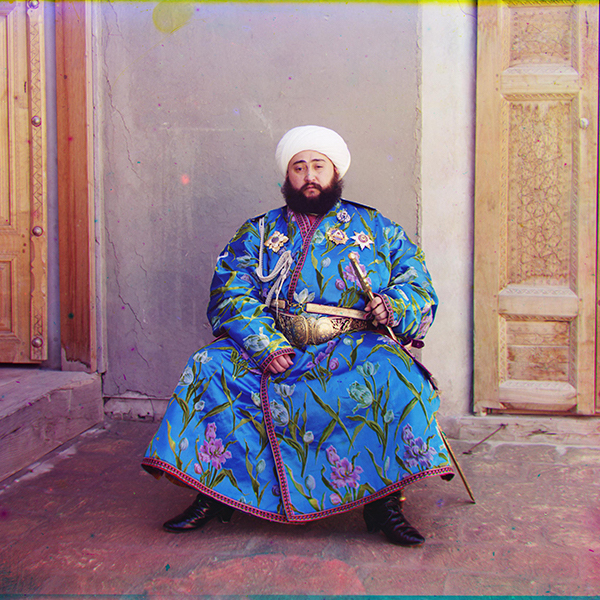
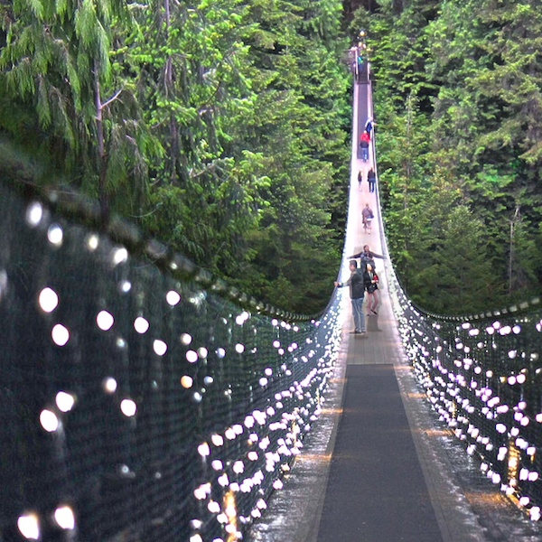
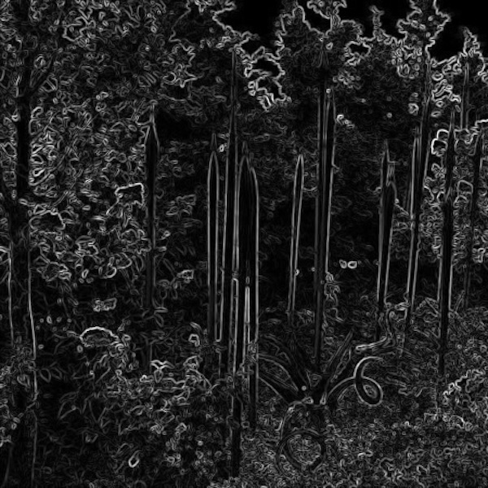
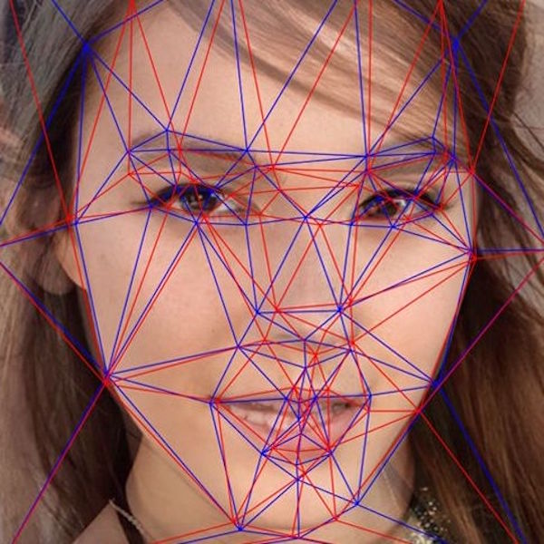
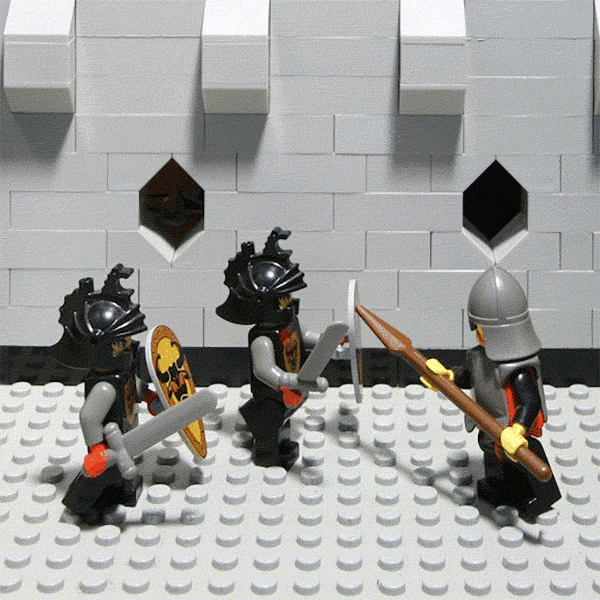
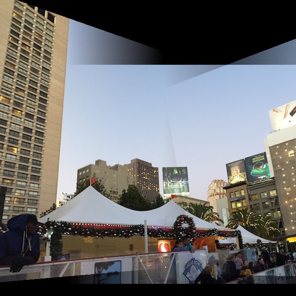
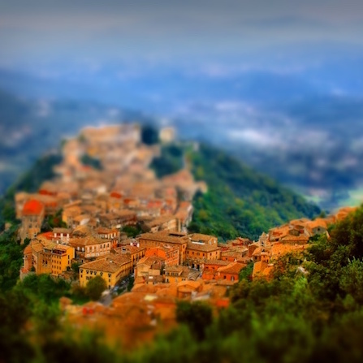

Project 1
Colourizing the Prokudin-Gorskii photo collection
Recreated photographs from R, G, B channel images through image alignment (with SSD, NCC, image pyramids, and edge detection) and compositing colour channels.
|

|

|
Project 2
Building a Pinhole Camera
Built my very own pinhole camera from scratch and experimented with long exposure.
|
Project 3
Fun with Frequencies
Explored various usages of image frequencies by implementing unsharp masking sharpen, Gaussian and Laplacian stacks, as well as multiresolution blending.
|

|
|

|
Project 4
Seam Carving
Implemented various energy functions and used dynamic programming to remove or add uninteresting seams from an image in order to create a new, resized image without losing important information.
|
Project 5
Face Morphing
Used a combination of warping and cross-dissolving triangulated images of faces into one another to create face morphs, cariatures, and mean faces of a population.
|

|
|

|
Project 6
Lightfield Camera
Created depth refocusing and aperture adjustment effects using images from the Stanford Light Field Archive as well as my own images.
|
Project 7
Automatic Mosaicing
Implemented both manual and automatic image mosaicing with the Harris interest point detector, rotational invariant features, and RANSAC.
|

|
|

|
Project 8
Fake Miniatures & Vertigo Shot
Created a fake miniature effect by blurring an image to narrow the perceived depth of field. Recreated the vertigo shot camera effect by taking series of images and incrementing the optical zoom.
|